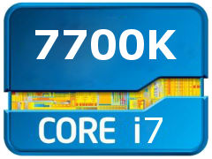

Intel Core i7-7700K Desktop Processor 4 Cores up to 4.5 GHz Unlocked LGA 1151 100/200 Series 91W.

$410.99 - $429.99
Specifications
Manufacturer: Intel
Core Count: 4
Core Clock: 4.2 GHz
Boost Clock: 4.5 GHz
TDP: 91 W
Series: Intel Core i7
Microarchitecture: Kaby Lake
Core Family: Kaby Lake-S
Socket: LGA1151
Integrated Graphics: Intel UHD Graphics 630
Maximum Supported Memory: 64 GB
ECC Support: No
Packaging: Boxed
Includes CPU Cooler: No
L1 Cache: 4 x 32 kB Instruction, 4 x 32 kB Data
L2 Cache: 4 x 256 kB
L3 Cache: 1 x 8 MB
Lithography: 14 nm
Simultaneous Multithreading: Yes: Hyper-Threading
Features
- Legacy Intel® Core™ Processors.
Shopping
Reviews from Customers
I purchased this to upgrade from the AMD A10, and the increase was stupendous. I have an HTC Vive, and the quality of VR has increased enough to justify that this is the only way to play. - User from Best Buy
All positive. Made my games in much smoother! Definitely see a difference in performance. - User from Best Buy
By comparison it is a MUUUCH faster chip. The whole system is much snappier. Video edits that used to take up to 8 hrs can be don in 3.5 now. Runs cooler and quieter system under load. - User from Best Buy
.PNG)